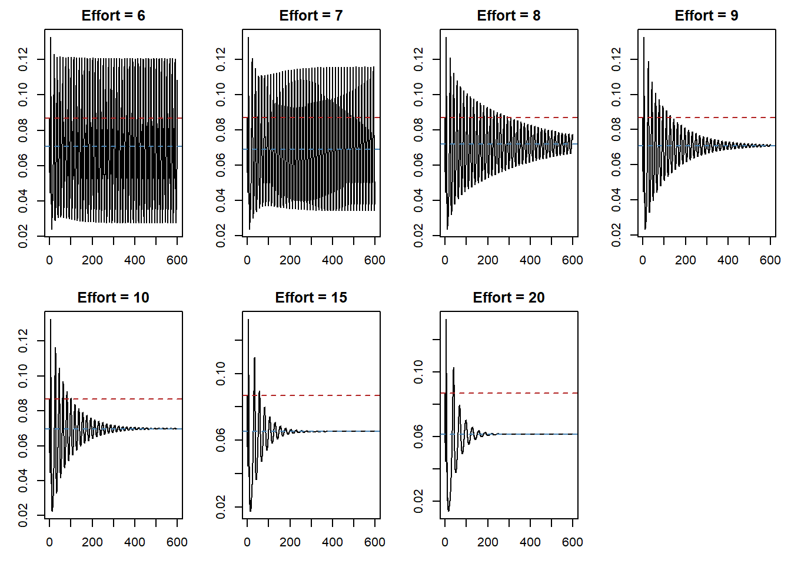

Code
library(mizer)
library(patchwork)
library(reshape2)
library(plotly)
library(dplyr)
library(mizerExperimental)
library(tidyverse)
library(glue)
library(ggplot2)Samia
June 30, 2026
Day 16 ended with one outstanding question: constant fishing effort up to 0.5 barely touches the limit cycle (mean biomass drops only 6%, the oscillations persist at every effort level tested). The self-compensation mechanism is as follows: fishing removes large adults → resource recovers more strongly → next cohort wave peaks higher, keeping the cycle alive across the whole biologically relevant range. But there must be a limit. At what effort does the population finally stabilise, or collapse?
Today answers that by scanning much higher effort levels: 6, 7, 8, 9, 10, 15, and 20.
The same helpers from Day 16 are used throughout.
make_params <- function(lambda = 2.05, resource_decrease = 0.001) {
a0 <- 100
kappa <- a0 * exp(-6.9 * (lambda - 1))
no_w <- round(log(66.5 / 0.0003) / 0.1)
params <- newSingleSpeciesParams(
species_name = "Anchovy",
w_min = 0.0003, w_max = 66.5, w_mat = 10,
no_w = no_w, lambda = lambda, kappa = kappa,
alpha = 0.1, gamma = 750, ks = 0
)
r <- getResourceRate(params) * resource_decrease
params <- setResource(params, resource_rate = r,
resource_dynamics = "resource_semichemostat")
params
}
make_limit_cycle_sim <- function(params, t_total = 600, effort = 0) {
params@initial_n_pp[] <- params@cc_pp * 0.1
sim_init <- project(params, t_max = 10, dt = 0.1, t_save = 0.2,
progress_bar = FALSE, effort = 0,
method = "predictor-corrector")
idx <- params@w >= 10 & params@w <= 100
last <- dim(sim_init@n)[1]
sim_init@n[last, , idx] <- sim_init@n[last, , idx] / 1e3
project(sim_init, t_max = t_total - 10, dt = 0.1, t_save = 0.2,
progress_bar = FALSE, effort = effort,
method = "predictor-corrector")
}The same test_constant_fishing setup from Day 16 (knife-edge gear at \(w_\text{mat}\), predictor-corrector, \(t = 600\) years) is run at effort values of 6, 7, 8, 9, 10, 15, and 20. The red dashed line in each panel is the unstable fixed-point biomass located by steadyNewton() at λ = 2.05; the blue dashed line is the mean over \(t > 400\).
test_constant_fishing <- function(effort, lambda = 2.05, t_total = 600) {
p <- make_params(lambda = lambda)
gp <- p@gear_params
gp$sel_func <- "knife_edge"
gp$knife_edge_size <- p@species_params$w_mat
gp$catchability <- 1
gear_params(p) <- gp
sim <- make_limit_cycle_sim(p, t_total = t_total, effort = effort)
bm <- getBiomass(sim)[, "Anchovy"]
t <- as.numeric(names(bm))
list(sim = sim, bm = bm, t = t)
}
efforts_fishing <- c(6, 7, 8, 9, 10, 15, 20)
results_fishing <- lapply(efforts_fishing, test_constant_fishing)
p_ref <- make_params(lambda = 2.05)
ss_ref <- steadyNewton(p_ref)
bm_fp_ref <- sum(getBiomass(ss_ref))par(mfrow = c(2, 4), mar = c(3, 3, 2, 1))
for (i in seq_along(efforts_fishing)) {
r <- results_fishing[[i]]
bm_mean <- mean(r$bm[r$t > 400])
plot(r$t, r$bm, type = "l",
xlab = "Time (years)", ylab = "Biomass",
main = paste0("Effort = ", efforts_fishing[i]))
abline(h = bm_fp_ref, col = "firebrick", lty = 2)
abline(h = bm_mean, col = "steelblue", lty = 2)
}
par(mfrow = c(1, 1), mar = c(5, 4, 4, 2) + 0.1)
Exp 7 — Constant fishing summary (lambda = 2.05):for (i in seq_along(efforts_fishing)) {
r <- results_fishing[[i]]
settled <- r$bm[r$t > 400]
y <- getYield(r$sim)[, "Anchovy"]
t_y <- as.numeric(rownames(getYield(r$sim)))
cat(sprintf(" Effort %.2f: mean = %.5f max = %.5f min = %.5f yield = %.6f\n",
efforts_fishing[i],
mean(settled), max(settled), min(settled),
mean(y[t_y > 400])))
} Effort 6.00: mean = 0.07084 max = 0.12069 min = 0.02771 yield = 0.000111
Effort 7.00: mean = 0.06919 max = 0.11586 min = 0.03434 yield = 0.000118
Effort 8.00: mean = 0.07197 max = 0.08255 min = 0.06208 yield = 0.000130
Effort 9.00: mean = 0.07086 max = 0.07293 min = 0.06890 yield = 0.000137
Effort 10.00: mean = 0.06977 max = 0.07039 min = 0.06914 yield = 0.000143
Effort 15.00: mean = 0.06520 max = 0.06523 min = 0.06517 yield = 0.000164
Effort 20.00: mean = 0.06150 max = 0.06150 min = 0.06149 yield = 0.000174The transition is clear and gradual:
| Effort | Dynamics |
|---|---|
| 6–7 | Sustained limit cycle; wide-amplitude oscillations persist for the full 600 years |
| 8–9 | Damped oscillations; the amplitude decays visibly and the trajectory spirals inward toward a fixed point |
| 10+ | Stable fixed point; oscillations die within ~100–200 years and the trajectory settles |
The bifurcation from limit cycle back to stable fixed point is therefore located at around effort ≈ 8. This is a reverse Hopf bifurcation: the same type of transition as the one at λ ≈ 2.08 in the lambda scan (Day 16), but now driven by fishing mortality rather than by the resource exponent.
The damped transient at efforts 8–9 (as opposed to a sudden collapse) is the signature of a supercritical Hopf bifurcation: near the critical point the limit cycle shrinks continuously to zero amplitude and the trajectory spirals into the fixed point rather than jumping discontinuously.
The red dashed line in each panel comes from steadyNewton(p_ref), which is supposed to mark the unstable fixed point that the limit cycle oscillates around. In several panels, particularly at high effort, this line sits at a biomass that looks implausibly high, and it is worth explaining why.
steadyNewton() solves for the steady state using a Newton–Raphson iteration rather than time integration. The problem with doing this on an unstable fixed point is that any deviation from it during the iteration would normally send the system spiralling away toward extinction before the solver converges. To prevent this, steadyNewton() internally inflates R_max, the Beverton–Holt reproduction ceiling, to an arbitrarily large value. With R_max → ∞, the Beverton–Holt function collapses to the density-independent limit (RDD ≈ RDI), and the reproductive floor is high enough that the fish population cannot collapse even when perturbed. The solver then converges to a fixed point under these artificial conditions and returns it.
The consequence is that bm_fp_ref is the biomass of a fixed point computed with a reproduction rate that is much higher than the biological parameters actually specify. It is a numerical artefact of the method, not a value derived from the true system. At low effort the inflation matters relatively little because the fixed point location is not sensitive to R_max in that regime; at high effort, where the population is being actively suppressed, the inflated reproduction props up the fixed point biomass significantly above where the real biological fixed point would sit. This is why the red line drifts further from the settled blue mean as effort increases, rather than converging to it as one might expect.
The fixed-point reference is therefore best read as a rough qualitative landmark, a marker for the approximate biomass around which the limit-cycle oscillations are centred at zero effort, rather than a precise biological quantity at each effort level.
The stabilisation is real, but it is not a management outcome. Instead, it is the consequence of removing fish so aggressively that the biological mechanism driving the cohort wave is disrupted.
The cohort wave is sustained by a feedback loop: a large cohort of adults spawns a burst of recruits → the cohort grows through the size spectrum → it becomes a large adult cohort → it spawns another burst. At modest fishing effort (0–0.5, the biologically realistic range from Day 16), enough adults survive to close this loop. At effort ≥ 8, the adult stock is suppressed so severely that even the massively inflated reproductive pulse is insufficient to sustain the wave. The oscillation starves for recruits and damps out.
The system does settle to a fixed point at high effort, but it is a lower-biomass fixed point than the limit-cycle mean. The self-compensation that kept the mean nearly constant up to effort = 0.5 is overwhelmed: fishing removes adults faster than the resource-recovery mechanism can compensate. The red dashed line (unstable fixed point at effort = 0) converges with the blue dashed line (settled mean) at high effort, but both are lower than the limit-cycle mean from Day 16.
This means that within any biologically plausible effort range, a population in the limit-cycle regime stays there. Fishing does not stabilise the cohort wave. It either leaves it intact (low effort) or destroys it alongside much of the fish stock (effort ≈ 8+). There is no intermediate regime where fishing gently damps the oscillations while maintaining the biomass advantage.
Several concrete follow-ups come out of today’s results.
Switch off diffusion and look for hysteresis. In the simpler (no-diffusion) model, the question is whether the system shows hysteresis: if the resource depletion rate is gradually decreased after the limit cycle has established, does the oscillation persist beyond the point where it would have started? Hysteresis, where the system stays in the oscillating regime even after the parameter that triggered it is relaxed, would be strong evidence that the bifurcation is subcritical rather than supercritical, and would change the interpretation of the effort scans above significantly.
Recheck the bifurcation type. The spiralling-inward transients at efforts 8–9 were interpreted as a supercritical Hopf bifurcation, but that diagnosis should be tested more carefully. The hysteresis check above is one test; another is to measure oscillation amplitude as effort approaches the critical value from below and check whether it scales as \(\sqrt{E_c - E}\) (supercritical) or jumps discontinuously (subcritical). The two cases have very different ecological implications.
Test the perturbation directly. Rather than relying on the two-stage perturbation in make_limit_cycle_sim, start from a clean fixed point and apply a small, controlled perturbation. If the system is genuinely in the limit-cycle regime, even a tiny push should grow into a full oscillation; if it is stable, the perturbation should decay. This is a cleaner diagnostic than the ad-hoc initialisation procedure and removes one possible source of the odd transient behaviour seen at moderate effort.
Revisit the steady-state solver. The caveat on the fixed-point reference line above, inflated R_max inside steadyNewton(), means the red reference line is not fully trustworthy. It is worth trying steadyProject() as an alternative, or using project() directly for a long run and taking the final state, to see whether a cleaner fixed-point estimate changes the interpretation of the panels at higher effort.
Read through the analytical solutions. Before running more numerical experiments, it would be useful to sit with the analytical steady-state solutions for the McKendrick–von Foerster equation and the Beverton–Holt coupling, and understand what each parameter change is predicted to do analytically. That would make it possible to check whether the simulations are confirming or contradicting the theory, rather than treating each new result as a surprise.